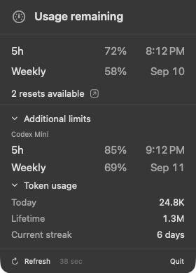
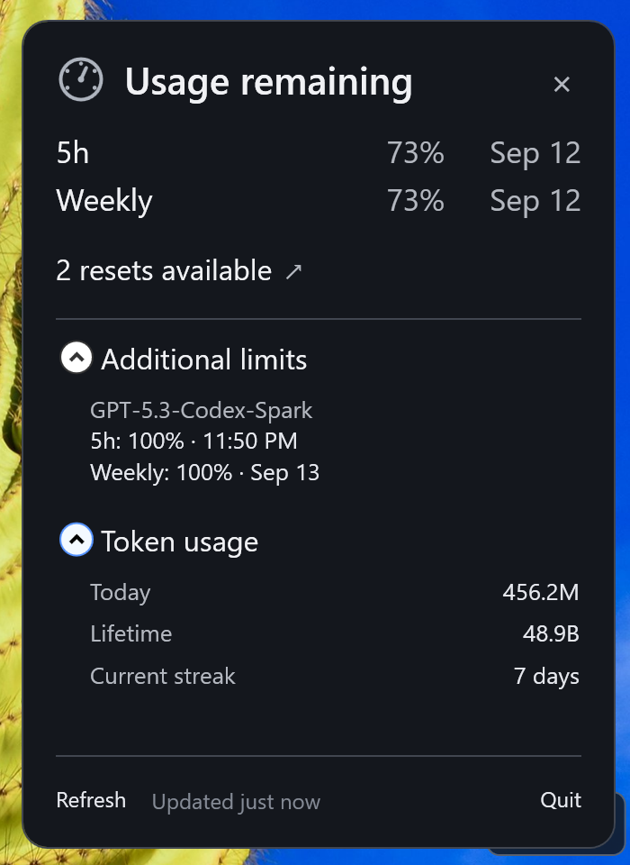

Know what’s remaining
See your usage limits, when they reset, and available reset credits without opening the dashboard.
FREE & OPEN SOURCE
Keep your remaining usage, reset times, and token totals close. A small companion for your Mac menu bar or Windows desktop.
macOS 13+ · Apple silicon & Intel
Windows 11 · x64

Example screens with sample usage.
LESS WINDOW SWITCHING
See your usage limits, when they reset, and available reset credits without opening the dashboard.
Expand Token usage for today’s totals, lifetime usage, and your current streak. The app remembers your choice.
A menu-bar item on Mac. A tray icon and movable percentage widget on Windows. Refresh and settings are always nearby.
TWO PLATFORMS. ONE PURPOSE.
Compact views of your Codex usage.
Sample data shown below.

GET STARTED
Free to use, with source code on GitHub. Choose the Mac disk image or Windows installer from the latest release.
Choose your downloadYou’ll need a working Codex CLI signed into ChatGPT under your user account. Mac can also use the CLI bundled with the ChatGPT desktop app. Windows setup can offer to install the CLI.
Current releases are unsigned, and the Mac app is not notarized. Windows Smart App Control can block the app. Read the installation notice and keep system-wide security protections enabled.
Installation and security notesChatGPT Usage is an unofficial companion maintained by Aaron Whippo. It is not affiliated with or endorsed by OpenAI. The app uses your local Codex CLI; it has no app-owned telemetry service.
Read the app’s privacy informationWe have applied to SignPath Foundation for free Windows code signing. Approval and integration are pending; existing releases remain unsigned. Aaron Whippo maintains the project and approves releases.
Report a security concern